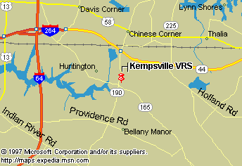

| |
K E M P S V I L L E V O L U N T E E R R E S C U E S Q U A D |
Fire & Rescue Station #9, 5145 Ruritan Court, Virginia Beach, Va. 23462
Tours are available on a pre-arranged basis (see Mailing address and phone numbers), or you are welcome to stop by at your convenience. If we're in-quarters, we'll gladly show you around.
Click on the map to the right to access a navigable version.
(We also provide links to Tidal Surge Maps.)